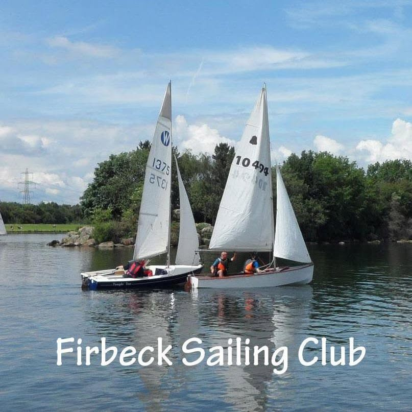

A family-friendly sailing club on the water at Rother Valley
No experience needed. No boat needed. Come in for a cup of tea and a chat, and we'll get you out on the lake.

Plenty of reasons to join us
We welcome all watersports enthusiasts, not just sailors.
-
No experience or boat needed
Boats, kayaks, paddleboards and watersports kit are all available to hire at the Council's watersports centre.
-
Friendly, informal tuition
Experienced members happily give advice and taster sessions to novices and beginners.
-
Free tea and coffee
Our meeting area keeps the kettle on — just bring your own milk and something to eat.
-
Secure boat storage
The Park provides a secure hardcore compound (fees payable to the Council) and a safe launching area.
-
No club duties
Nobody puts you on a rota. Just turn up and sail.
-
A whole park to enjoy
Ample parking and lots to do on and off the water, so the family is never short of something to do.
When we sail
Wednesdays, Saturdays and Sundays
The lake and facilities are open every day through the summer, and there's a programme of social events for members through the year.
Racing, sort of
Informal races, limited rules, plenty of fun
We're not a racing club as such, but we run informal races through the year to sharpen your skills and add some excitement. On non-race days you'll always find members willing to chase each other round the buoys.
Coming in summer 2026
A brand new clubhouse for the club's 50th year.
Membership
£30 a year for the whole family
Annual membership for a family with children under 18. Download the form, fill it in, and pay by bank transfer — the account details are on the form.
- Download and fill in the 2026 membership form
- Pay the subscription by bank transfer, using your name as the reference
- Email the form to the secretary — then come and sail
Find us
Rother Valley Country Park
We've sailed here since the Park opened in 1983. The lake is managed by Rotherham Council, who provide changing rooms, safety cover, dinghy hire and RYA courses.